RIZZIO DISCOGRAPHY
ASK YO' MOMMA (LP) — AUG 1993

The first transmission. Persona introduced without restraint. Appetite, confidence, and repetition form the structural language that will echo through the entire catalogue. The myth begins in direct form before it fractures into masks.
 Close To The Borderline
Close To The Borderline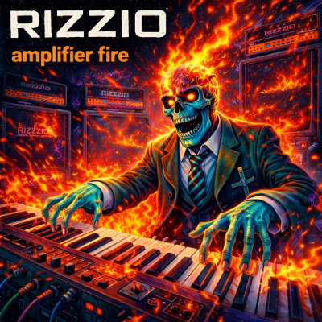Amplifier Fire
Friends And Strangers
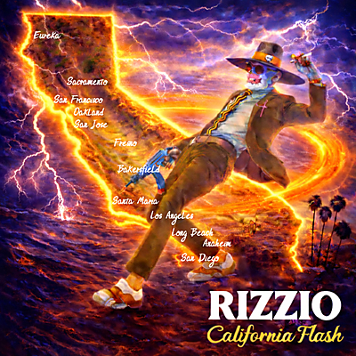California Flash
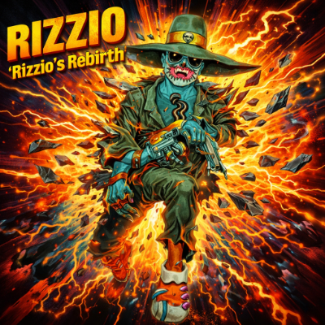Rizzio's Rebirth
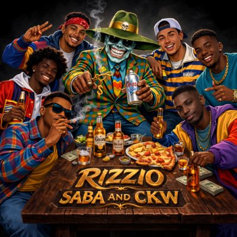Saba And CKW
Stiletto
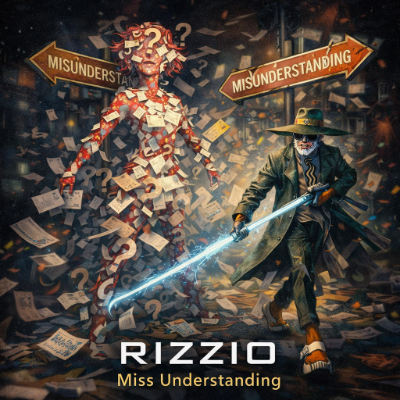Miss Understanding
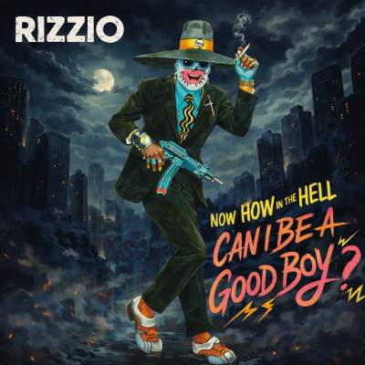Can I Be A Good Boy
Down The Boulevard
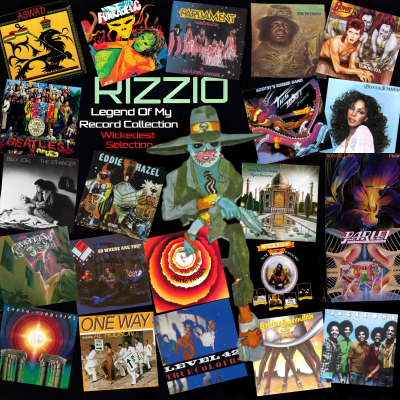Legend Of My Record Collection (Wickedest Selection)
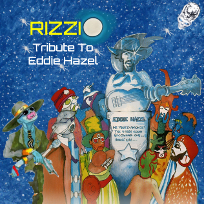Tribute To Eddie Hazel
P Flex
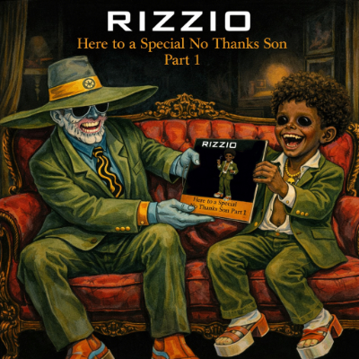Here To A Special No Thanks Son Part 1
DON'T LOOK - BUY!! (LP) — SEPT 1993

Doctrine replaces introduction. Performance merges with transaction. Geography enters the frame and satire sharpens. The “Here To A Special…” sequence continues, embedding recurrence as structural spine rather than repetition.
Girl Called Sally
May-Kit-Fun-Key
Nasty Iz Nicety
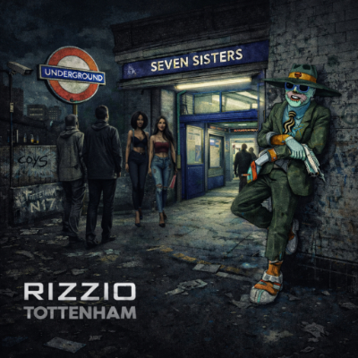Tottenham
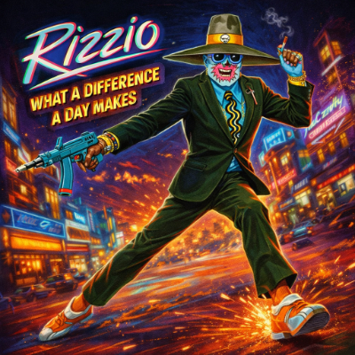What A Difference A Day Makes
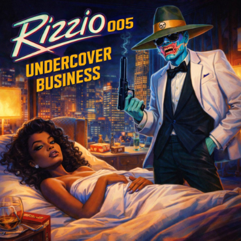Undercover Business
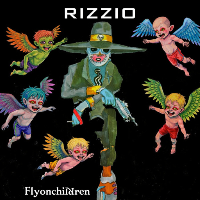Flyonchildren
On The Beach Lies A Boy
OCU4A3T YI8R12B
You Scared Me Baby
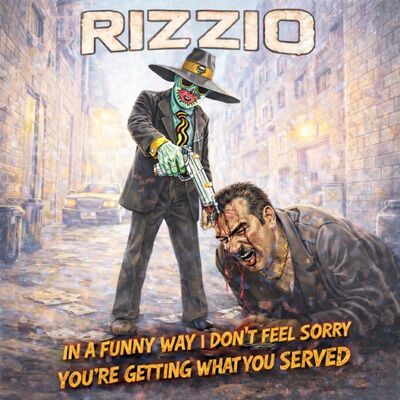In A Funny Way I Don't Feel Sorry You're Getting What You Served
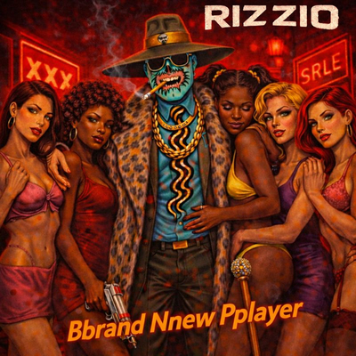Bbrand Nnew Pplayer
 End Of The World (Not The)
End Of The World (Not The) Here To A Special No Thank You Part Two
Here To A Special No Thank You Part TwoLYRICAL CONTENT (LP) — FEB 1994

Technique intensifies. Persona fragments multiply. Wordplay becomes deliberate engineering rather than instinct. Social commentary emerges beneath bravado, expanding the myth beyond seduction into observation.
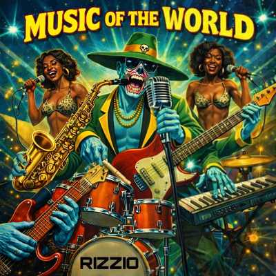Music Of The World
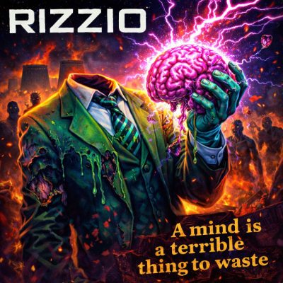A Mind Is A Terrible Thing To Waste
69
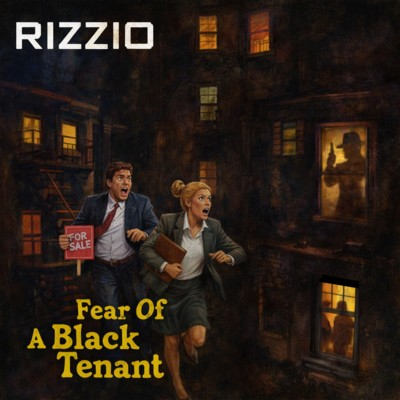Fear Of A Black Tenant
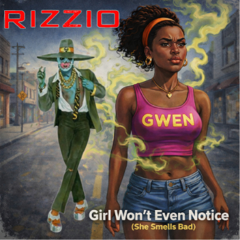Girl Won't Even Notice (She Smells Bad)
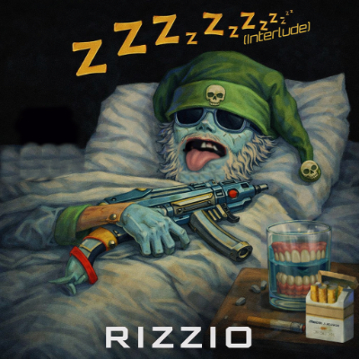Zzzzzz(Interlude)
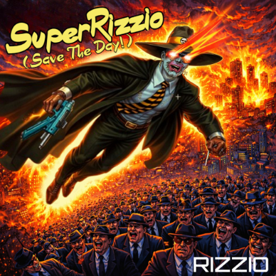SuperRizzio (Save The Day!)
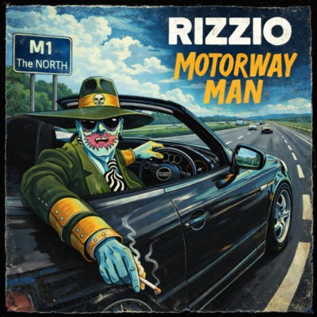Motorway Man
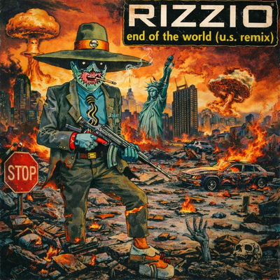End Of The World (U.S. Remix)
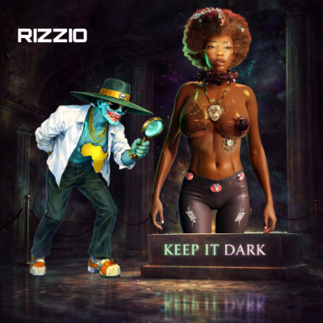Keep It Dark
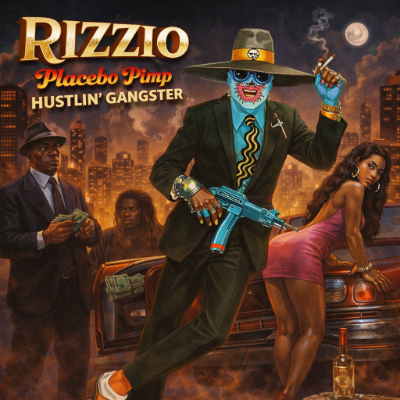Placebo Pimp Hustlin' Gangster
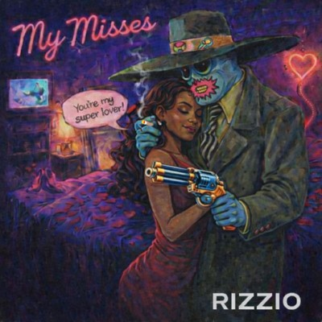My Misses
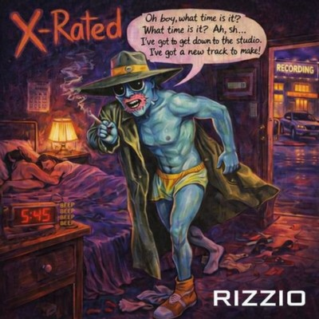X-Rated
 Like Those Lovely Girls Say
Like Those Lovely Girls Say Here To A Special No Thank Me Part Three
Here To A Special No Thank Me Part ThreeI'LL GET MINE IN YO' HOME (LP) — SEP 1994

Territory becomes metaphor. The “home” shifts from location to psychological domain. Sir Rizz stabilises as persona form while the ritual sequence extends its spine deeper into the catalogue.
Big Booty Bitches, Slutty Slags And Horny Hoes
 I'll Get Mine In Yo' Home
I'll Get Mine In Yo' HomeWe're Glad You're Here
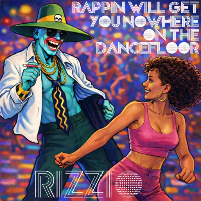Rappin' Will Get You Nowhere On The Dancefloor
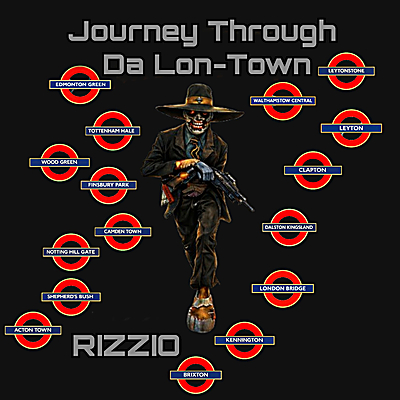Journey Through Da Lon-Town
Phone Call Yall
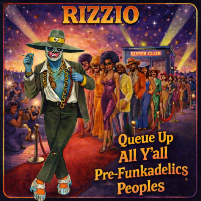Queue Up All Y'all Pre-Funkadelics Peoples
Six O'Clock
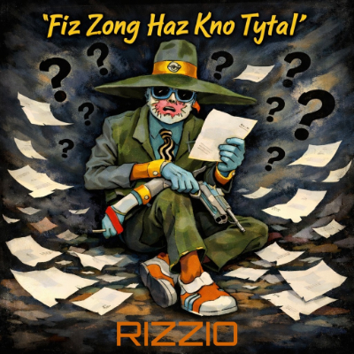Fiz Zong Haz Kno Tytal
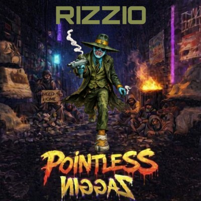Pointless Niggaz
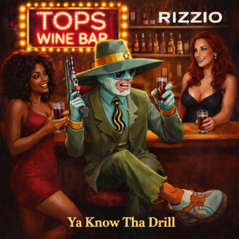Ya Know Tha Drill
V Riddla
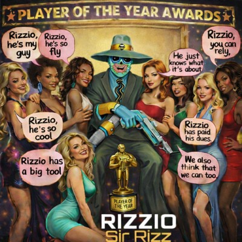Sir Rizz
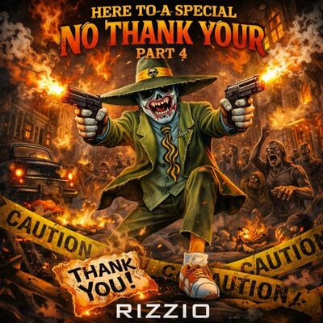Here To A Special No Thank Your Part Four
COMIN' ROUNDA MOUNTAIN (LP) — JAN 1995

Expansion phase. Persona elasticity increases and recurrence turns ritual. The Named Women System consolidates while satire sharpens into structural exaggeration. This is the longest movement of the era, and it behaves like it.
 Can't Stay Away
Can't Stay Away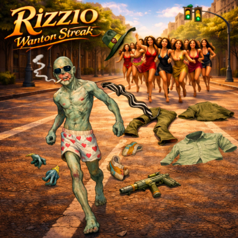Wanton Streak
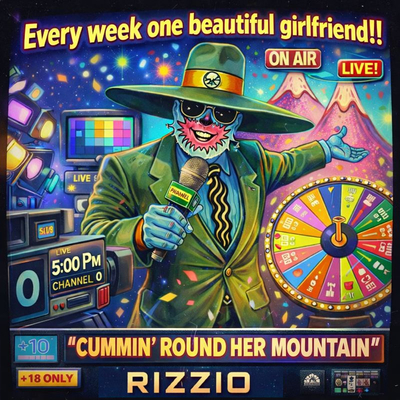Cummin' Round Her Mountain
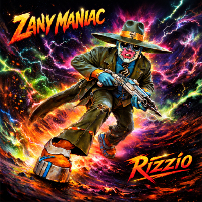Zany Maniac
 Dirty Old Man In A Raincoat
Dirty Old Man In A Raincoat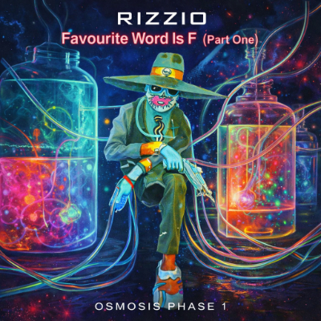Favourite Word Is F (Part 1)
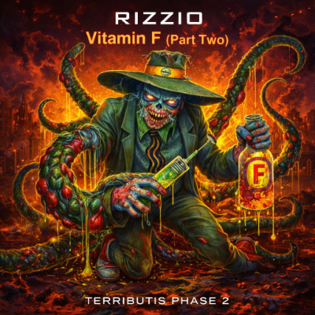Vitamin F (Part 2)
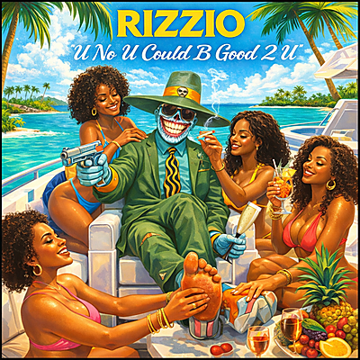U No U Could B Good 2 U
Vinyl Vs C.D
Homiez All Knowz Me
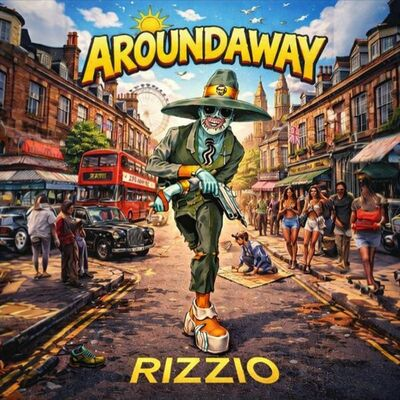Aroundaway
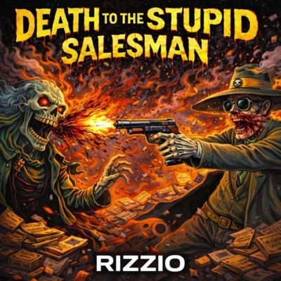Death To The Stupid Salesman
Put On You Chocolate Stuff
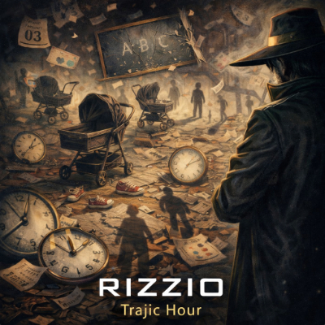Trajic Hour
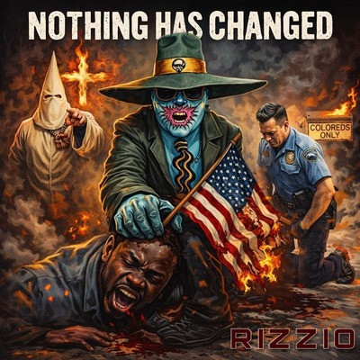Nothing Has Changed
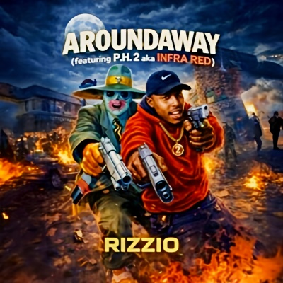Aroundaway (Featuring P.H.2 Aka Infra-Red)
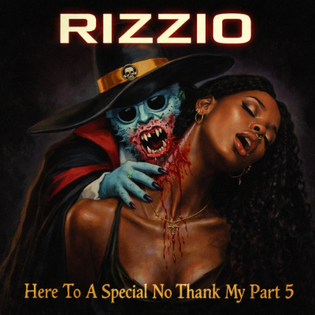Here To A Special No Thank My Part 5
EQUALOPPORTUNITYNASTIES (LP) — JUL 1995

Compression and provocation. Appetite becomes mirror. Persona exaggerates itself to expose itself. The ritual spine advances again, reinforcing longitudinal continuity across albums.
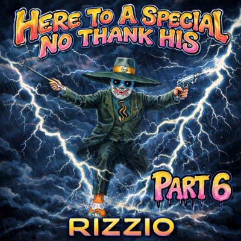Here To A Special No Thank His Part 6
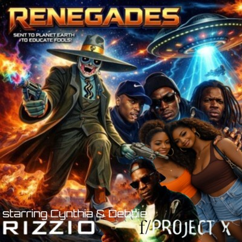Renegades (F Project - X starring Cynthia & Debbie)
 This Goes Out To The Lon-Town (Featuring Project X)
This Goes Out To The Lon-Town (Featuring Project X)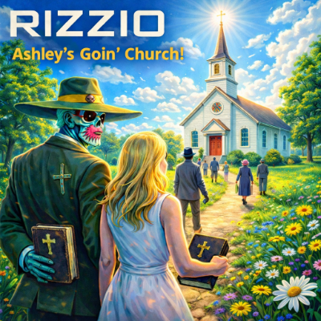Ashley's Goin' Church!
Cap'm's Log
Nikki's Nikkers
Comin' 4 U
Wanted
PX Reps
Cautious My Precious
Fisherman's Friend
Necessary Necessities
Injustice
Odds Are Stacked Against Me
Man Of The Match
Untitled
Here To A Special Thank Heavens Part 7
DREAD GROOVES HORIZONTAL (LP) — JAN 1996

Atmosphere overtakes confrontation. Groove becomes structural. Persona stabilises rather than provokes. The mythology deepens through immersion rather than declaration.
Here To A Special No Thanks Mate Part 8
So You Wanna Be A Boxer?
Night-Mare Animal Instincts
House Of Lordz
Metaphors 4 Beta Scores
 Defy The Laws Of Physics
Defy The Laws Of PhysicsI Will Never Never Surrender
Red Blue (Colour Me Funky)
Dicey
Projex In FX Iz PX
Pack Neva Stacks
Sho' 'N' 'Tel (Shona & Tallulah)
Confucius Says
I Don't Make No Erm-Ology
Bring Your Dinner Too
The Executive Seducer
Here To A Special No Thank Mine Part 9
THE PROJEXT X ERA — THE AMERICANS SET THE FOUNDATION (LP) — JUN 1997

Geography widens. Confidence consolidates. Persona reaches full stabilisation. The ten-part ritual spine completes, closing the first circuit of the catalogue and sealing the foundation era.
Bad Lyrics
Tings And Stuff
Ghetto Street Stuff
Desperate Times
Know Tha Game
C Da Real
Playtime
U Get Me
 Bangin'
Bangin'You're Goin' Down You Slagg
Who Da Baddest
Know Tha Game (Sir Rizz Mixx)
Here To A Special No Thanks Then Part 10
Catalogue Summary
Total LPs: 8
Total Tracks: 121
Total Runtime: 5:02:43
The Foundation Era establishes the closed-loop architecture of the Rizzio system. Persona Architecture, Motif Logic, Numerological Coding, and Mythic Geography all originate here. Later volumes expand the mythology. This is where it becomes structurally irreversible.
Total LPs: 8
Total Tracks: 121
Total Runtime: 5:02:43
The Foundation Era establishes the closed-loop architecture of the Rizzio system. Persona Architecture, Motif Logic, Numerological Coding, and Mythic Geography all originate here. Later volumes expand the mythology. This is where it becomes structurally irreversible.